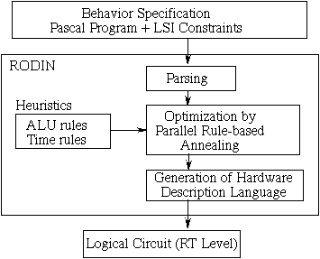

(70) High Level Synthesis System: RODIN
Machine: Multi-PSI
Environment: PIMOS V3.4
Language: KL1
Source Code: 3.5 MB
Documents: Manual (English/Japanese)
Overview
A system for synthesizing a circuit from an LSI behavior
specification.
Key Features
- Near-optimum circuit is designed from an LSI behavior
specification, which is composed of the algorithm described in the
Pascal language and LSI constraints.
- The register-transfer level circuit ganerated by RODIN is decribed
in the standard hardware description language used in various logical
circuit synthesis tools.
- Near-optimum circuit is synthesized in short time by using the
parallel rule-based annealing method in the optimization phase which
generally consumes much time.
- Parallel rule-based annealing method is based on the simulated
annealing method. It offers speed-up by using the heuristic knowledge
and parallel processing by Multi-PSI.
Configuration

FTP
- High Level Synthesis System: RODIN [903K]

www-admin@icot.or.jp